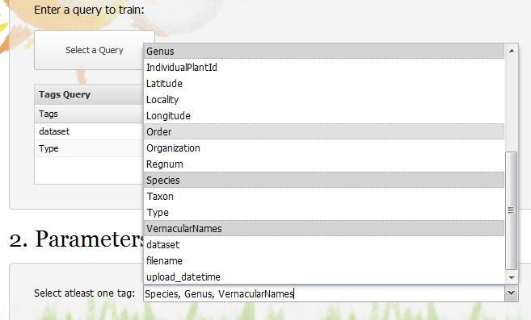

Botanicam: The Trainer is a module that trains model with Principle Component Analysis and Support Vector Machine on a set of images divided into classes by their given tags. The feature used to create the model is the Homogeneous Texture Descriptor extracted from non-overlapping tiled images of the original image. Each tile is 64 by 64 pixels. The output of this module is a zip file containing the model and tags on the model file providing information on the model like number of classes, tags attached to the classes, etc. The last file created is used by Botanicam 4: The Plant Recognizer as the model file. All the model files can be found here
Botanicam Trainer has moved to use all Python! The new module now uses scikit-learn's SVM module to create a model and bisque's feature service for the feature calculations and bisque's very own API to make requests. Check out the source code here!
By using this free and open source software you agree to reference this work and its authors in any products produced using it, including but not limited to scientific papers, posters, technical reports, presentations, leaflets, etc.
1. In the "Select Data for Processing" section there are 2 options:
2. In the parameters section use the drop down menu to select the tags divide the images into classes. Note: You can select one or more of these tags.
3. Finally to run the module click "Run." Make sure that you have selected the correct data and parameters. The module can take from a few minutes to a few hours depending on the size of the dataset selected.
If the results you obtained are not what you have expected please contact us!